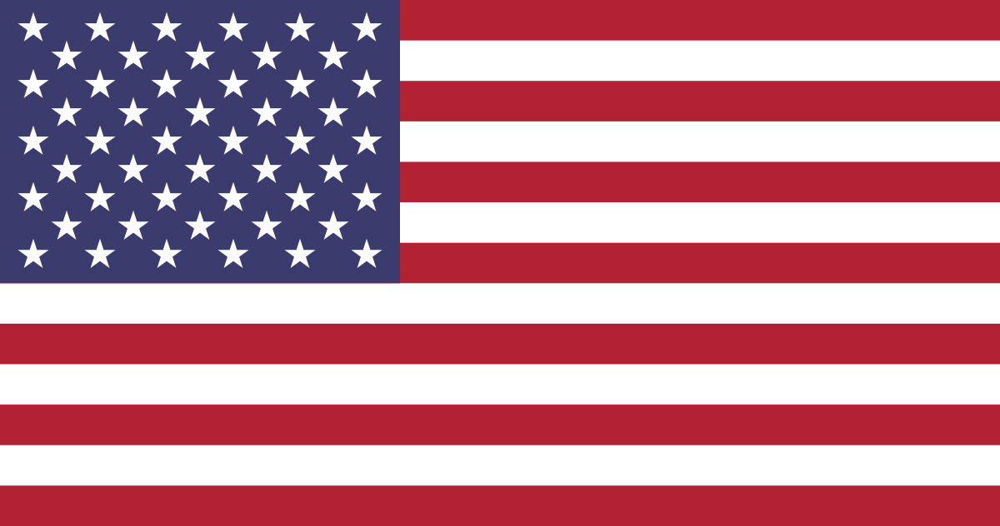

VERSIÓN MOVIL
(Margenes reducidos, IMGs rescaladas, textos mas grandes y algunas animaciones pausadas)Curriculum Vitae
David Vázquez Almenara
Nacido el 20/06/03
Localidad: Sevilla
Transporte: Coche
Profesion actual: Programador
Experiencia laboral: 1 años
Profesión anterior: Tecnico informático

PROFESIONAL
PROFESIONALIDAD Y COMPAÑERISMO
Soy un profesional altamente competente y capaz de cumplir con las exigencias de cualquier trabajo. Mi experiencia en el campo demuestra mi habilidad para adaptarme a diferentes situaciones y desafíos, siempre manteniendo un alto nivel de calidad en mi trabajo.

Mi habilidad para trabajar en equipo es una de mis fortalezas más notables. Tengo la capacidad de comunicar efectivamente mis ideas y escuchar las de mis compañeros. Siempre estaré dispuesto a brindar apoyo y orientación a mis compañeros de trabajo.
ACADÉMICA
ESTUDIOS
Actualmente tengo la ESO y he realizado un grado medio de micro informatica y redes, y un grado superior de Desarrollo de Aplicaciones Web. Todos esto estudiando en diferentes centros, incluyendo: Manantial, Jacaranda, Chaves Nogales y ADAits.
La ESO fue una etapa académica que me permitió obtener conocimientos sobre la informatica y ofimatica a un nivel basico.
Además, estudiar en diferentes centros me permitió adquirir habilidades importantes, como la capacidad de adaptación y la flexibilidad.
LABORAL
EXPERIENCIA LABORAL
Realicé practicas en la empresa ESOJ Sistemas, una empresa dediacada a la reparación e instalacion de dispositivos e impresoras.
También estuve trabajando en esta misma empresa durante 4 meses y trabaje con marcas como:
HABILIDADES
- Photoshop
- Editores de imágenes
- Sony Vegas
- Ofimáticas
IDIOMA
INGLES
Durante la ESO, tuve la oportunidad de estudiar inglés como una de las asignaturas obligatorias, sin embargo, mi conocimiento del inglés se incremento durante un año en el que me dediqué a hablar con hablantes nativos de inglés a través de internet.
Hablar con personas cuyo idioma nativo es el inglés me dio una experiencia real de comunicación y me ayudó a ganar confianza en mi capacidad para hablar el idioma.